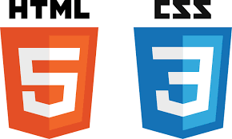

Mon Blog Web Manane Boukari : les Origines du Web
Bienvenue sur mon site web né d’une passion pour le digital et d’un constat : de nombreux débutants souhaitent apprendre la ""programmation web" mais ne savent pas par où commencer. Ici, je vous propose un voyage à la découverte des "fondements du développement web", en explorant ses origines, ses langages de base et ses principes essentiels. Que vous soyez curieux ou motivé à bâtir vos premiers sites, ce site est conçu pour vous guider pas à pas vers la maîtrise du web.
Aux origines du web : naissance et évolution d’un monde internet
Les prémices du Web
L’histoire d’Internet remonte aux années 1960, en pleine Guerre froide, lorsque les États-Unis cherchent un moyen de sécuriser leurs communications. C’est ainsi qu’ARPANET, un réseau expérimental développé par l’ARPA (Advanced Research Projects Agency), voit le jour en 1969. Ce réseau permet à plusieurs ordinateurs de communiquer entre eux, marquant ainsi le premier pas vers ce qui deviendra Internet.
Tim Berners-Lee et l’invention du Web

Si Internet existait déjà sous forme de réseau, le World Wide Web (WWW), tel que nous le connaissons aujourd’hui, est l’œuvre de Tim Berners-Lee, un ingénieur britannique. En 1989, alors qu’il travaille au CERN, il imagine un système de partage d’informations basé sur l’hypertexte. Il développe les premiers éléments du web : le HTML (langage de structuration des pages), le HTTP (protocole de communication) et le premier navigateur.
La démocratisation du Web
Dans les années 1990, le Web quitte les laboratoires pour s’ouvrir au grand public. En 1993, le navigateur Mosaic facilite l’accès aux pages web grâce à une interface graphique conviviale. L’apparition des premiers sites, moteurs de recherche et services en ligne marque le début d’une révolution numérique. Des entreprises comme Yahoo! (1994) et Google (1998) émergent, rendant le Web plus accessible et organisé.
L’essor du Web et son impact
Avec l’explosion d’Internet dans les années 2000, le Web devient un outil incontournable dans tous les domaines : communication, commerce, éducation et divertissement. L’arrivée du Web 2.0 favorise l’interactivité avec les réseaux sociaux, les blogs et les plateformes collaboratives. Ce tournant marque le passage d’un Web purement informatif à un espace dynamique et participatif, façonnant le monde numérique que nous connaissons aujourd’hui.
Nos Articles à Venir

Découvrez comment Comment fonctionne Internet ?comprenez le rôle des serveurs, des protocoles et des réseaux qui permettent la communication en ligne..
Lire la suite

Retour sur les premiers logiciels permettant de naviguer sur Internet.Explorez l'histoire des premiers navigateurs web, de Mosaic à Netscape, qui ont révolutionné l'accès à Internet
Lire la suite
Comment Internet est-il devenu ce qu'il est aujourd'hui ?Découvrez son évolution, des premières connexions aux technologies modernes qui façonnent le web d’aujourd’hui
Lire la suite


Découvrez HTML, CSS, : Apprenez les bases essentielles du développement web et créez vos premières pages interactives avec HTML et CSS
Lire la suite
À propos
Voici les dates importantes des origines du Web :
| Année |
Événement |
| 1989 |
Tim Berners-Lee propose le concept du World Wide Web. |
| 1991 |
Première page Web mise en ligne. |
| 1993 |
Naissance du premier navigateur graphique : Mosaic. |
| 1994 |
Création du W3C (World Wide Web Consortium). |
| 2004 |
Apparition de Firefox, un concurrent à Internet Explorer. |
| 2008 |
Google lance son navigateur Chrome. |
| 2014 |
Le HTML5 devient la nouvelle norme officielle du Web. |
Le Web a parcouru un long chemin depuis ses débuts modestes jusqu’à devenir l’élément central de notre ère numérique. À travers ce blog, nous avons exploré son histoire, ses fondements et ses technologies essentielles, ouvrant ainsi la voie à une meilleure compréhension de la programmation web.
Mais apprendre le développement web ne s’arrête jamais : les langages évoluent, de nouvelles tendances émergent, et les possibilités sont infinies. Ce blog se veut un point de départ pour vous accompagner dans cette aventure, vous fournir les bases solides et vous donner l’envie d’aller plus loin.
Que ce soit pour créer votre premier site, approfondir vos compétences ou simplement satisfaire votre curiosité, chaque ligne de code que vous écrirez sera une brique de plus dans votre apprentissage. Le Web est un terrain d’innovation et d’expression sans limites—alors, à vous de jouer !
À propos de moi
Je suis Manane BOUKARI, un passionné de marketing digital et de communication, avec une expertise en référencement digital. Mon objectif est d'accompagner les entreprises et entrepreneurs dans leur transition numérique en mettant en place des stratégies efficaces et adaptées à leurs besoins.
Que ce soit pour la création de contenu, le branding ou la mise en place d'une présence en ligne optimisée, je mets mes compétences au service de vos ambitions.
📧 Email : mananibkr@gmail.com
📞 Téléphone : +229 55 36 26 65
Retrouve-moi sur :
LinkedIn |
Facebook